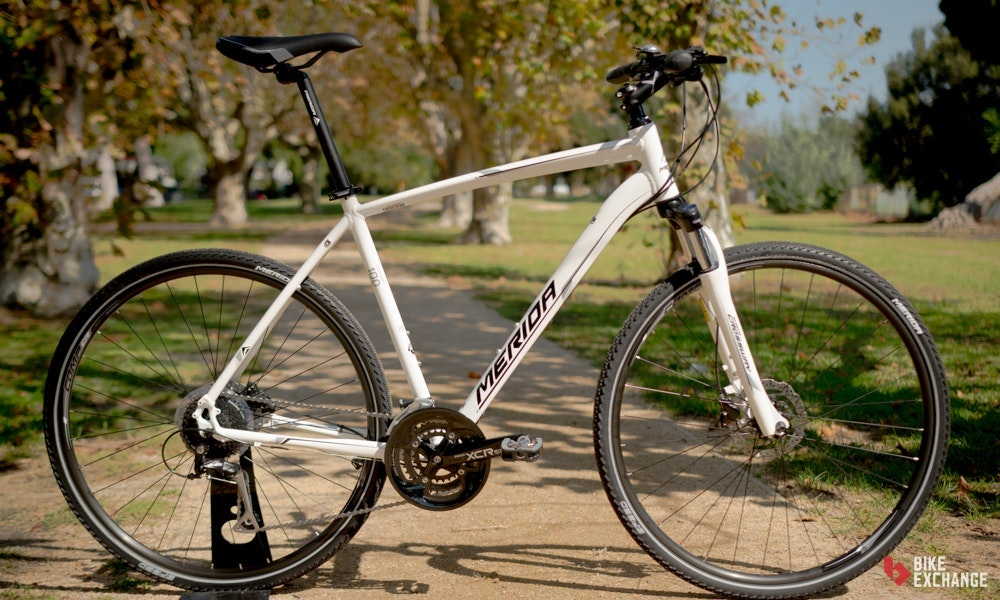

Bicicletas Hibridas

Seguro las conoces como bicicletas de confort o "fitness", las híbridas normalmente ofrecen la posición de montar más erguida. Su nombre se debe a que nacieron como el balance entre las bicicletas de ruta y las de montaña, pero hoy en día se podrían describir mejor en la categoría de bicicletas recreacionales que se usan para mantenerse en forma. Si lo que buscas es disfrutar en la carretera, rodar sin preocuparte por la velocidad ni poner a prueba las acrobacias que se pueden lograr con otros tipos, entonces las bicicletas híbridas son lo tuyo. Las hay con suspensión doble, y hasta en el asiento, como las hay rígidas. Son perfectas para personas con lesiones y dolores crónicos, pero que aún quieren tener la experiencia de montar sobre una buena bicicleta.
Cuadro
Los cuadros de las híbridas están tienen una geometría que tiene como objetivo la comodidad, permitiendo una posición con el torso erguido, relajando brazos y cuello. Normalmente están construidos en aluminio, aunque se pueden encontrar bicicletas de gama alta fabricadas o que utilizan componentes de fibra de carbón. Aunque de manera general la geometría se asemeja más a la de los cuadros de MTB, existen modelos que tienden más que tienden un poco hacia los cuadros de ruta, como verás más adelante.
Manubrio/manillar
Normalmente utilizan manubrios rectos o de doble altura, similares a los de las bicicletas de montaña. Es posible encontrar modelos, enfocados más al confort que utilizan manubrios de trekking y algunos que además utilizan potencias ajustables.
Ruedas
Las ruedas de las híbridas suelen ser de un ancho intermedio entre las de ruta y las de montaña. De manera general usan llantas/cubiertas ideales para uso en pavimento, aunque tanto el ancho como el dibujo pueden variar dependiendo de los objetivos particulares de cada bicicleta. Es muy común el rodado 700, pero existen modelos que usan 26″ especialmente en tallas chicas y medianas.
Velocidades
Las híbridas utilizan velocidades múltiples, generalmente con un rango amplio de velocidades que facilita las subidas y permite una buena velocidad en terrenos planos. También, es posible encontrar modelos que tienen rangos bajos, más parecidos a los utilizados por las bicis de montaña y otras con rangos altos como las bicis de ruta. La gran mayoría de estas bicicletas usa cambios con desviador, pero es posible encontrar algunos modelos con cambios internos.